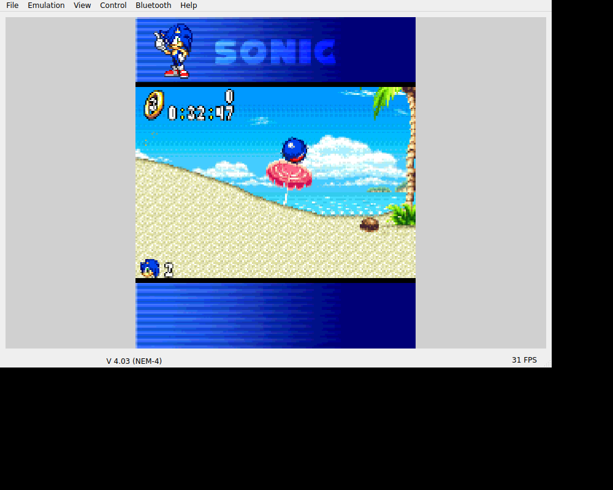

Sonic N has the same explanation as Sonic Jump: my brother likes Sonic. The records take us through two very different moments—playing the original first level on the host, then sorting out an Android screen that closed before the game opened.SJ00SN01SN03
Already airborne.
The earlier Linux EKA2L1 run reached character select and the first level. Sonic moved, collected rings from zero to three, jumped and paused. The original screen and volume keys remained separate from the gameplay actions.SN01SN02

Sonic airborne in the original first-level host run. This is the unchanged v0.1.0 Linux EKA2L1 window, including its neutral emulator menu/status bars.
Open the image for the full original view.
SN90This was the stopgap route: the unchanged emulator core plus original N-Gage platform data, with existing guest saves kept separate from first-install extraction. Running the game through a dedicated bridge did not remove those dependencies.SN05SN06SN02
Before the window decor existed.
The later 0.1.1 phone symptom appeared before gameplay. A production-Activity reproduction found the shell asking Window.getInsetsController before the decor view existed. Geometry checks and tests that began with an already-created Activity had missed that order.SN03
We created the decor before querying its insets controller and installed fault capture before building the UI. The same startup test then passed with the native guest boundary disabled. That checked the repaired startup order; the earlier original-game run remained our gameplay evidence for this window.SN04
We had a game that could run in one environment and a shell that failed before reaching it in another. Keeping both records meant we could fix the Android startup without losing track of the first level we’d already reached.SN01SN04
About these records
The brother motivation is current owner recollection. The port-of-a-port teasing is not assigned to a particular Sonic edition. Original gameplay images are unchanged Linux EKA2L1 windows from the historical 0.1.0 route. The startup repair belongs to the Android shell/framework test, not a new physical-phone or independent-runtime result.
The receipts
Selected source lines, investigation notes and recorded feedback. Open a receipt for the original context and scope.
SJ00 / Sonic for his brotherOwner recollection
Source: Archive-building conversation / owner-supplied recollection
The brother motivation applies to Sonic Jump and the other Sonic recovery. The port-of-a-port teasing is not assigned specifically to Jump; the owner did not identify that edition in this recollection.
sonic jump is because my brother likes sonic hahah its the same reason i did sonic. which he made fun of me more cause its a port of a port i guess.
SN01 / Original Sonic movement and rings preceded the UI-only updateCheckpoint investigation notes
Source: Sonic_N_Bridge_v0.1.2_PRIVATE_CHECKPOINT.zip / Sonic_N_Bridge_v0.1.2_PRIVATE/VERIFICATION.txt · selected lines 69–83
INHERITED EXECUTION EVIDENCE The evidence/host-*.png and original-execution.log originate from v0.1.0. They show original boot/intro and player-controlled first-level movement, 0 -> 3 rings, airborne jump, pause, # screen toggle and 0 sound indicator. The original game created 1080-byte sonic.da0/sonic.da1 files in the host C drive. No host saves are in the Android seed. Audio was not listening-tested. The desktop EKA2L1 build differs from the Android binary; prior host execution is not physical-device verification of this update. REMAINING DEVICE ACCEPTANCE No new Android device evidence supplied. Verify continuous thumb slides, move+jump holds, both one-tap mode switches, no stuck touch/physical input, portrait/landscape safe areas and labels, original softkeys, Android Back to caller/Omni, actual Downloads .txt output, audio and background/resume. No full campaign, stage-clear persistence or long-session claim is made.
SN03 / The real Activity reproduces the launch crashCheckpoint investigation notes
Source: Sonic_N_Bridge_v0.1.2_PRIVATE_CHECKPOINT.zip / Sonic_N_Bridge_v0.1.2_PRIVATE/VERIFICATION.txt · selected lines 1–14
LAUNCH CRASH FIX — v0.1.2 Device evidence: supplied Samsung screenshot says Sonic N closed because of an app bug. The recovered 6.47-second recording shows repeated icon taps and immediate returns to the launcher before the gameplay screen appears. REPRODUCED ROOT CAUSE Production MainActivity.onCreate builds BridgeGameplayUi before setContentView. In the supplied v1.1.0 kit, setupWindowInsets calls Window.getInsetsController before PhoneWindow decor is created, causing a NullPointerException in PhoneWindow.getInsetsController. This exact exception is reproduced with the actual MainActivity and real compiled resources under Android API34 framework callbacks/Robolectric 4.16.1. The generic already-created-Activity shell test and pure geometry/input checks did not exercise this lifecycle ordering.
SN02 / The native Sonic controls and clean save extractionCheckpoint investigation notes
Source: Sonic_N_Bridge_v0.1.2_PRIVATE_CHECKPOINT.zip / Sonic_N_Bridge_v0.1.2_PRIVATE/README_FIRST.txt · selected lines 35–49
ORIGINAL CONTROLS D-pad: movement, menu choices, look/crouch. Combined original direction codes are preserved, including down+movement for original rolling behavior. 5: jump / confirm; 7: special attack / cancel. Character abilities remain native. Down + 5, then release Down: original Spin Dash. MENU L: start / pause. MENU R: back / cancel / pause. SCREEN # uses original Symbian scan 0x7F, not ASCII #. SOUND 0 controls volume. Original Options > BUTTON CONFIG can swap 5/7; bridge labels describe NORMAL. Controller: D-pad/left stick movement; A=5, B=7, X=#, Y=0, Start=MENU L, Select=MENU R. Keyboard: arrows/numbers, Enter=5, F1/F2=softkeys, Backspace=Clear. Android Back exits the Activity and returns to its caller/Omni. Touch and physical owners are independent. Mode switches release touches; controller buttons/axes remain held until their own release or lifecycle cleanup. The original game saves automatically to private guest C/E drives. First-install extraction never overwrites existing files. The clean seed includes no host saves.
SN90 / Historical image / Sonic NHistorical host capture
Source: Sonic_N_Bridge_v0.1.2_PRIVATE/evidence/host-jump.png
Retained historical host output. Original emulator chrome, where present, is part of the unchanged source image. No phone capture or phone performance is inferred.
Unchanged historical image. Source member: Sonic_N_Bridge_v0.1.2_PRIVATE/evidence/host-jump.png SHA-256: 5d1fe073fbb57ecf6175d65001675d42f6f180ed436fd2d84fdf61c980c1f39e Sonic airborne in the original first-level host run. This is the unchanged v0.1.0 Linux EKA2L1 window, including its neutral emulator menu/status bars. Scope: Historical Linux host emulator capture retained in v0.1.2; not a phone screenshot or v0.1.2 guest replay. Any FPS counter is emulator UI, not an Android benchmark.
SN05 / Native core, original game and platform data remain distinctCheckpoint investigation notes
Source: Sonic_N_Bridge_v0.1.2_PRIVATE_CHECKPOINT.zip / Sonic_N_Bridge_v0.1.2_PRIVATE/THIRD_PARTY_NOTICES.txt · selected lines 1–6
EKA2L1 native compatibility core is by the EKA2L1 contributors, GPL-3.0-or-later. Recovered source and license accompany the private checkpoint. See upstream/. Nokia N-Gage firmware/device data are recovered original platform components. Sonic N code, artwork, audio and data are the original supplied game; ownership and trademarks remain with their respective rights holders (SEGA/Nokia). The app's launcher/header icon is decoded from the supplied SONICN.AIF.
SN06 / The recorded borrowed runtime infrastructureCheckpoint investigation notes
Source: Sonic_N_Bridge_v0.1.2_PRIVATE_CHECKPOINT.zip / Sonic_N_Bridge_v0.1.2_PRIVATE/upstream/PROVENANCE.json · selected lines 13–19
"publicly_published": false, "reused_checkpoint": "Private Ashen v0.1.1 / Shadowkey v0.1.1 runtime infrastructure and native scan-code pad, unchanged EKA2L1 ARM64 core and N-Gage firmware.", "host_runtime_build": "master-6ac519122 (Linux continuous AppImage; host evidence only)", "android_runtime_build": "Unmodified native ARM64 binary recovered from Pocket Kingdom checkpoint; native_sha256 is authoritative.", "original_uid": "0x101FB882", "ui_only_update": "v0.1.2 startup fix; original seed/native/icons/signing unchanged; inherited original execution evidence.", "startup_repair": "v0.1.2: initialize decor before insets controller; move fault capture before UI construction. Actual MainActivity Android API34 host regression reproduces old failure and passes repair, with native guest boundary disabled only for that test."
SN04 / Decor before insets, fault capture before the UICheckpoint investigation notes
Source: Sonic_N_Bridge_v0.1.2_PRIVATE_CHECKPOINT.zip / Sonic_N_Bridge_v0.1.2_PRIVATE/UI_STARTUP_FIX_v0.1.2.txt · selected lines 1–17
Shared v1.1.0 startup defect:
BridgeGameplayUi.setupWindowInsets calls Window.getInsetsController while the
Activity is still constructing its gameplay shell, before setContentView.
PhoneWindow.mDecor can be null. This caused the immediate launch crash.
Embedded fix:
android.view.WindowInsetsController bars =
activity.getWindow().getDecorView().getWindowInsetsController();
if (bars != null) bars.show(WindowInsets.Type.systemBars());
getDecorView creates PhoneWindow decor before the controller is queried.
Move the bridge's Java fault-handler installation ahead of UI construction.
The original supplied kit is retained untouched in app/ui-kit. The integrated
source changes are recorded in evidence/ui-kit-integration.patch. The actual
MainActivity baseline reproduces the exception; the repaired startup passes.
This discovery may matter to other bridges integrating the same kit; no other
installed bridge or global kit was modified in this Sonic-specific task.